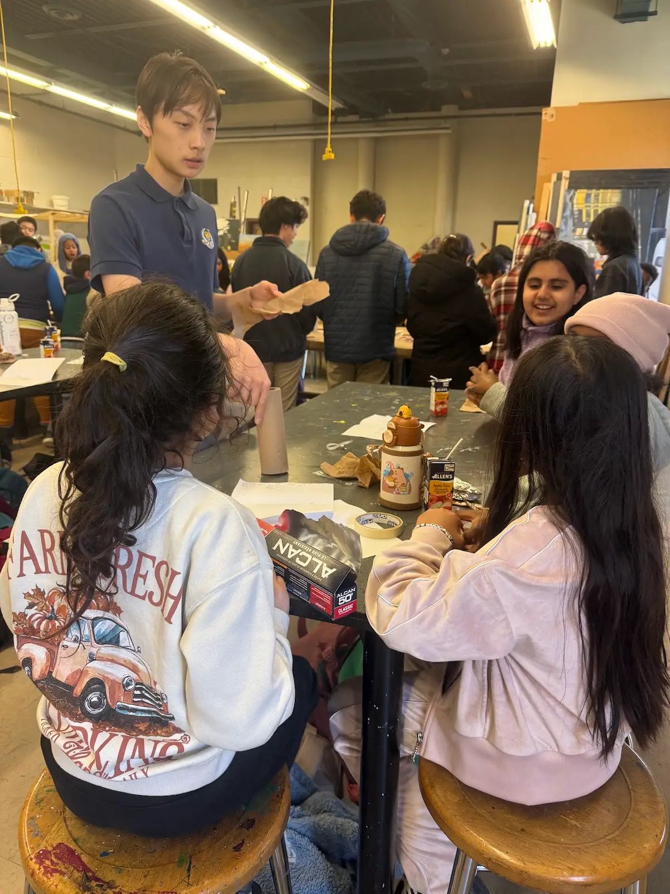
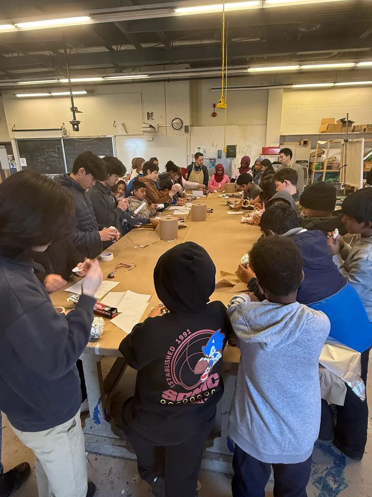
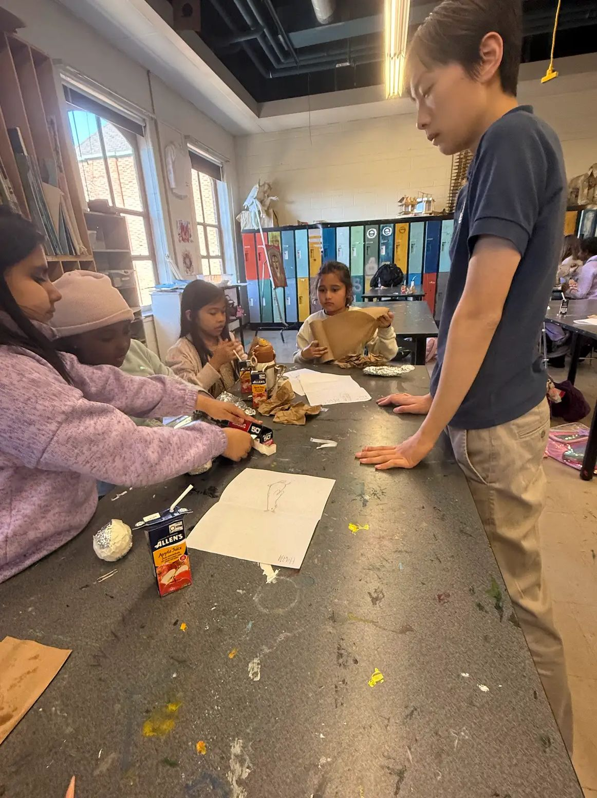
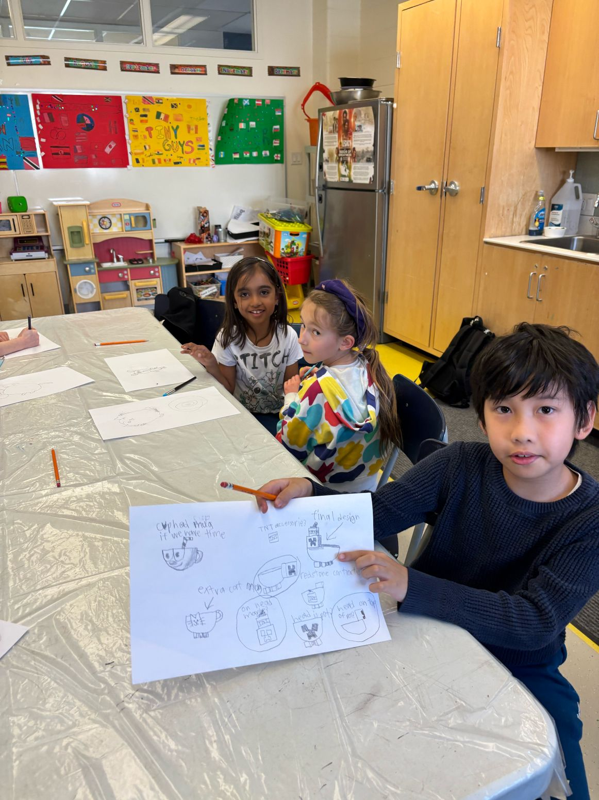
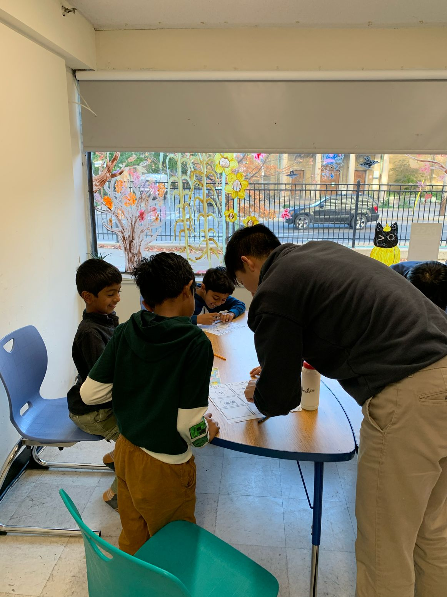
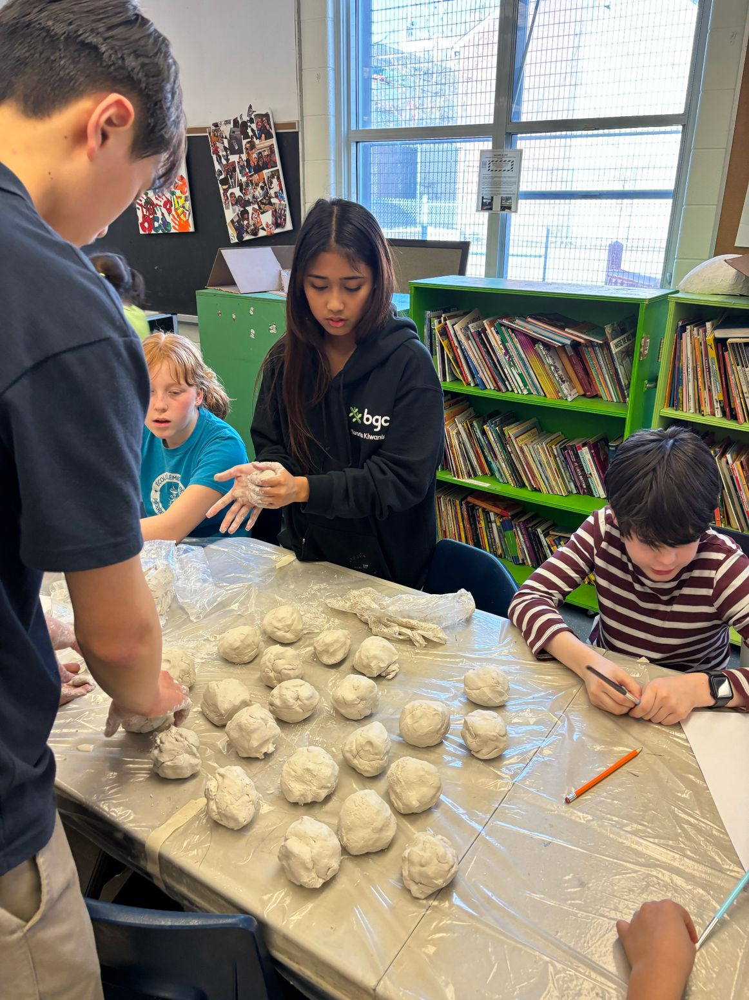

Make something you have never made before.
Hands & Canvas workshops are built around experimenting, changing ideas, and making something personal — not copying one perfect example.
Bring a Workshop to Your CommunitySimple structure. Lots of room to make it your own.
Workshops are typically one-hour sessions, with attendance often ranging from roughly 30–45 students.
Meet the materials and the idea.
Start somewhere without needing a perfect plan.
Change colours, shapes, techniques, and directions.
Leave with something that feels like yours.
Build it first. Then let the surface change everything.
A project can move through construction, shaping, surface work, and colour — with plenty of room for each young artist to make different choices.




A prompt is only the starting point.
Comic-style and design activities provide enough structure to begin without deciding the ending. Volunteers can help someone start, ask questions, or simply make space for the idea to keep going.





A material that changes as soon as you touch it.
Clay invites experimentation immediately: press, roll, join, flatten, rebuild, start again.



School, youth program, community centre, or after-school space?
Tell us who you serve, what kind of program you are imagining, and how we might create together.